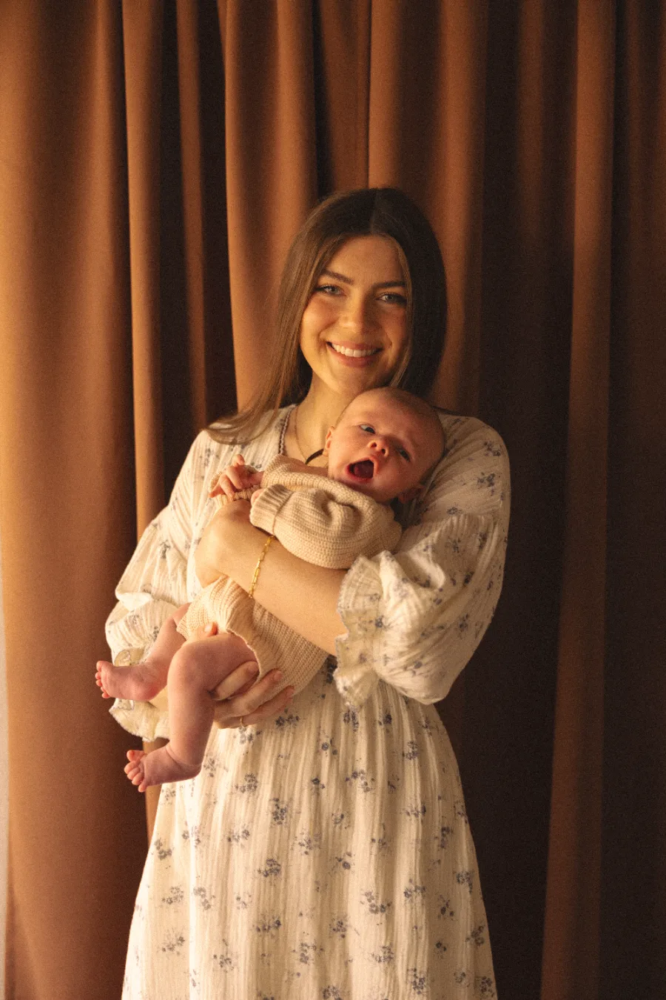
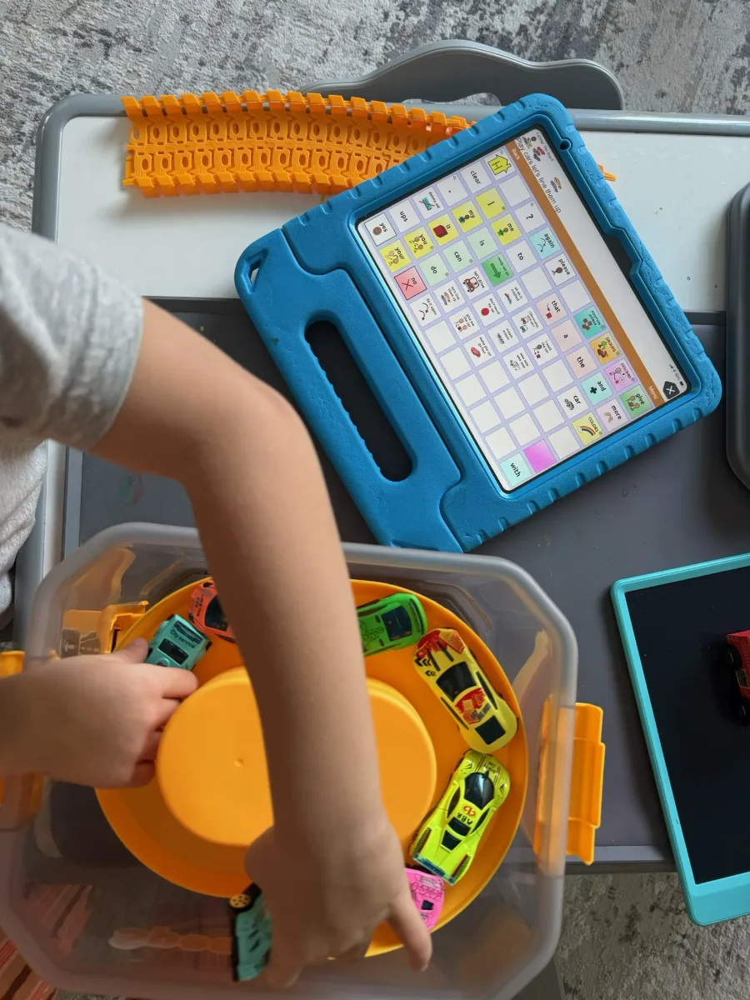

“Both of my girls have thrived under Madison’s care and guidance. She has such a special way and calming presence about her”
Meet the clinician, founder, and steady presence guiding each family with care.
For Madison, speech therapy has always been about more than words. As a child, she worked with a speech-language pathologist who helped her connect more meaningfully with the people around her. That experience shaped her career and the belief behind Social House Therapy: communication begins with feeling seen, understood, and supported.
Madison earned her bachelor’s degree in Speech and Hearing Sciences from Arizona State University and her master’s degree from Northern Arizona University. Before becoming an SLP, she spent four years as a speech-language pathology assistant. Her experience now spans homes, schools, clinics, ABA centers, community settings, and virtual care.
Her areas of focus include late talkers and language delays, speech sound disorders, childhood apraxia of speech, stuttering, gestalt language processing, AAC, and autism. Madison builds trust through each child’s interests, creating a calm, playful space where trying something new never feels like getting it wrong. Parents are included with clear explanations and practical strategies that fit naturally into everyday routines.
Madison founded Social House Therapy to provide care that feels personal, thoughtful, and handcrafted for each family. Her vision is to build a team of supported, continually learning clinicians who share that same commitment to relationship-based, family-centered care.
Too often, parents arrive after feeling rushed, overlooked, or unsure what to do next. They may have received a plan that did not fully fit their child, experienced frequent therapist changes, or left sessions without understanding what was being worked on or why.
We built Social House Therapy to offer a more thoughtful experience, one where concerns are taken seriously, children are seen as whole people, and families are included throughout the process. Our goal is to pair high-level clinical care with clear communication, practical strategies, and the consistency needed to build trust.
We never want therapy to feel like just another appointment. We want families to feel like someone is finally in their corner.
Because connection comes first, and that is where meaningful progress begins.
You may see the frustration without knowing exactly what is getting in the way. The difficulty may involve speech, language, motor planning, fluency, or not yet having a reliable way to communicate.
At Social House Therapy, we help you understand what you are seeing and what to do next, so your child has more reliable ways to express themselves and be understood. We work with children from infancy through the school-age years.
Check out our services →
“Day by day he has become more expressive, more confident, and more willing to communicate.”
When a child feels rushed, they may pull back. When they feel regulated, understood, and genuinely enjoyed, they begin reaching out. That is why every plan begins with trust and play, long before any drill.
You’ll hear what we’re seeing and why it matters in sentences you can repeat to your partner that same night. No acronyms, no homework you have to decode.
We build on who your child already is, including their interests, humor, strengths, and way of relating, rather than trying to change who they are.
No mystery, no performance. Here’s the rhythm most families settle into once we begin.
“Our son loves her and has made huge progress under her care.”
“Madison was so kind, patient, and knowledgeable.”
“Madison was very patient with my son.”
In your living room, at the park, at the local library, at an ABA or child care center, or on a screen at the kitchen table. Kids show us the most on ground that already feels like theirs, so that’s where we meet them.
You’ll always know what we’re working on and why, and you’ll leave with one small, doable thing to try before the next visit. One thing, never a stack.
Because for a young child, play is the work. We build communication into whatever they’re already into: trains, snacks, dinosaurs, the lot.
The moments that matter happen at the dinner table and in the back seat, so that’s where the strategies are pointed: toward the routines you live every day.
A free 15-minute call gives you space to share what you’re noticing and hear an honest, jargon-free perspective on what may come next. There is no pressure to schedule an evaluation and no script to follow.